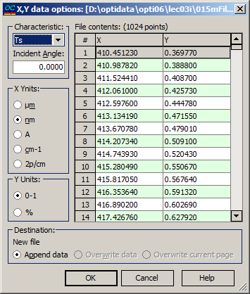

Import X,Y data
Import X,Y data
This option is useful when it is necessary to import simple ASCII two-column files. Typically, the first column represents the wavelength (or wavenumber), while the second column represents a specific characteristic (such as Reflectance, Transmittance, etc.).

To import X, Y data in OptiLayer, use the Import X, Y data options dialog box. In this dialog box, you can specify the type of measured characteristic and units for the X and Y columns. The data extracted from the current file will be displayed on the right side of the dialog box. The File contents box allows you to scroll through the imported file’s content. The X column represents the wavelength grid, and you should select the proper wavelength unit in the X-Units field. The Y column displays one of the six possible spectral characteristics: Ts, Tp, Ta, Rs, Rp, Ra, BRs, BRp, BRa. Choose the appropriate characteristic in the Characteristic field, and specify its range (0-1 or 0-100%) in the Y-units field. You can also specify the Incident Angle if needed. In the Destination field, the name of the data file being edited and the destination page are indicated. You can choose to append data, overwrite data in the current file, or overwrite only the current page in the file. When you press the OK button, the content of the destination file will be overwritten with the content of the X, Y data file. If the number of rows in the source file exceeds the number of rows in the destination page, additional destination pages will be automatically added, and the extra data will be written to these pages.